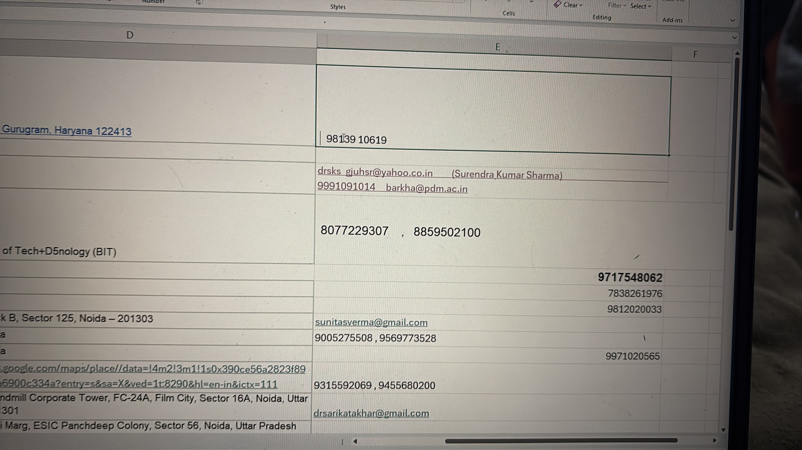

Wrapping up the 5-week journey with documentation, social media impact, and final deliverables!
Consolidating all the contacts and finalizing the ground reports. Here is a glimpse of the final data collection and tracking sheets.

Instead of writing a standard text document for my internship journey, I decided to blend my technical skills with my NGO experience. I custom-coded this entire Interactive Web Timeline from scratch to document my efforts, creating a unique digital portfolio of my work with BloodConnect!
Spreading the message digitally! I created a unique, interactive animated chat video to bust common blood donation myths in a fun, engaging, and creative way.
View Live Chat Animation 🚀